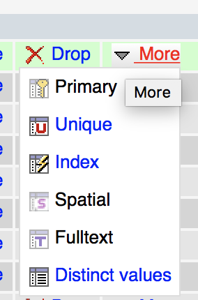
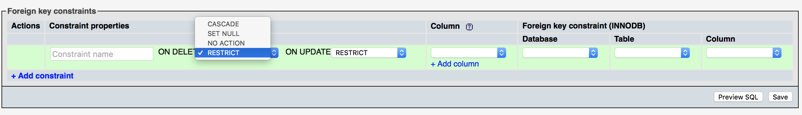

< Index
Hausaufgaben
Recherchiere die Antworten zu den Fragen in den drei Themenfeldern:
1. Indizes in MySQL-Tabellen
- Was passiert in der Datenbank, wenn du einen Index auf einer Spalte anlegst?
- Muss man in MySQL zwingend Indizes anlegen?
- Was ist der Vorteil beim Einsatz von Indizes?
- Welche Optionen gibt es für Indizes in MySQL und was bedeuten diese?

2. Foreign Keys in phpMyAdmin anlegen
- Wie kann man in phpMyAdmin Fremdschlüssel anlegen? Erstelle einen Screenshot, der aufzeigt, wie du zur "Beziehungsansicht" oder "Beziehungsübersicht" oder "relation view" gelangst! Leider ist das in jeder Version von phpMyAdmin anders ...
- Was passiert, wenn du in phpMyAdmin das Feld für den "Constraint-Name" leer lässt?
- Im "relation view" findest du die beiden Dropdowns "ON DELETE" und "ON UPDATE". Was bedeuten die Optionen, die Sie dort vorfinden:
- RESTRICT
- CASCADE
- SET NULL
- NO ACTION
- Was kann es für unliebsame Konsequenzen haben, wenn du dir nicht bewusst bist, was diese Optionen genau bedeuten?
- In welcher (früher sehr verbreiteten) Speicherengine von MySQL kann man keine Fremdschlüssel anlegen?

3. MariaDB
- Recherchiere kurz die Geschichte der Entstehung des Projekts "MariaDB!"
- Was sind die drei wichtigsten Unterschiede zwischen MariaDB und MySQL?
- Warum wissen viele Webentwickler gar nicht, was MariaDB ist?